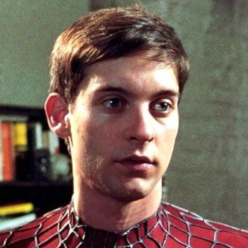
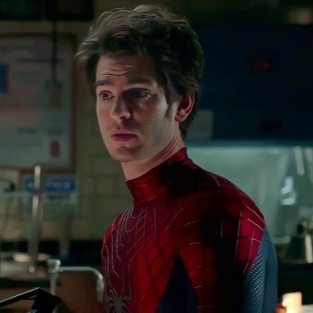
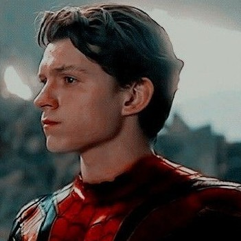

El Clarín Independiente
"Archivo de Investigación: Los rostros detrás de la máscara" | Edición Especial

Sujeto #1 - El Clásico
Tobey Maguire
Visto por primera vez en 2002. Reportes indican que genera telaraña orgánica y tiene una extraña obsesión con repartir pizzas a tiempo. El pilar del universo arácnido cinematográfico.

Sujeto #2 - El Sorprendente
Andrew Garfield
El más acróbata y carismático. Desarrolló web-shooters de alta tecnología y destaca por su velocidad. Nuestras fuentes dicen que aún lamenta un evento en una torre de reloj.

Sujeto #3 - El Vengador
Tom Holland
El miembro más joven. Ha viajado al espacio y colaborado con tecnología Stark. Aunque un hechizo borró su identidad del mundo, en esta redacción seguimos tras su pista.